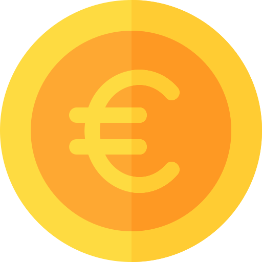

?
C'est ici que se trouve la liste des meilleurs artistes ! Ce classement est réalisé en
fonction de la popularité et de l'activité des artistes sur les 6 derniers mois. L'activité d'un artiste se fonde sur le nombre d'œuvres qu'il publie ainsi que sur le nombre de commentaires qu'il laisse auprès d'autres artistes.
Le classement évolue chaque jour mais un jour compte plus que les autres, le lundi !

Chaque lundi, les artistes classés dans le top 15 des coups de coeur reçoivent une rémunération, en fonction de leur nombre d'abonnés et de leur position dans le classement.